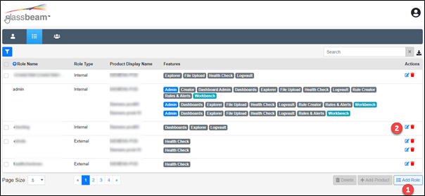
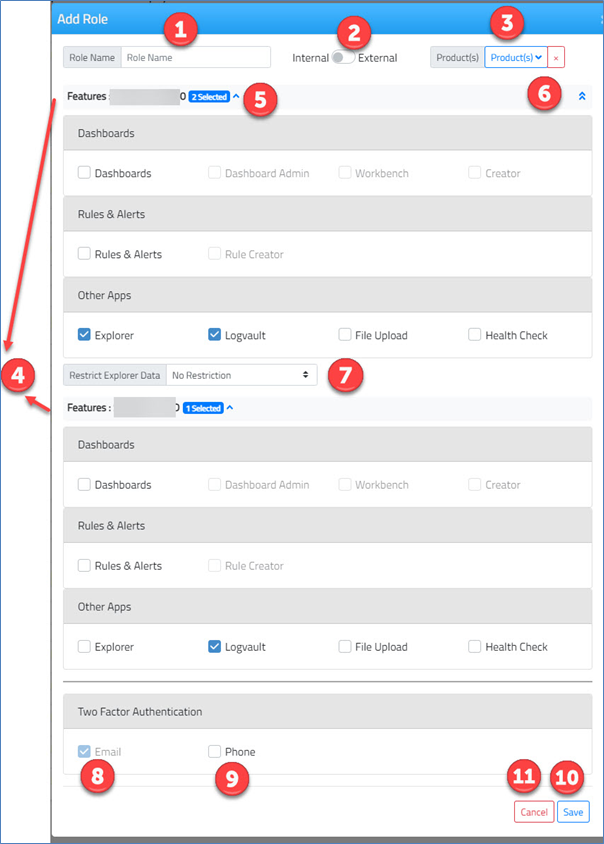
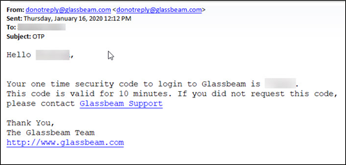
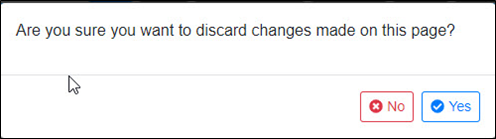

Add/Edit Role

To add a new role, click on Add Role (annotated as 1 in the above screen shot) which opens the Add Role screen.
To edit an existing role, click on Edit Role (annotated as 2 in the above screen shot) which opens the Edit Role screen to facilitate the inclusion/exclusion of features for the respective role-product combination.

|
Number |
Description |
|
1 |
Add: Enter a role name. Edit: Role name is not editable and hence not visible. |
|
2 |
Add: Toggle between Internal/External role types. By default, a role is Internal. Edit: Once a role is added as Internal/External, it is not possible to change the role type. Hence role type is not visibile. |
|
3 |
Add: Drop-down list of all the products that are configured for your organization. You can select multiple products. Edit: Editing is always applicable to one role-product combination. Hence, product drop-down list is not visible. |
|
4 |
Add: For each selected product in , a header with corresponding default feature is displayed. You can select/unselect other features based on licences allocated to your business. Edit: All the features that were selected/unselected for the product while adding the role are displayed. You can edit the feature selections based on the licences allocated to your business. Note:
|
|
5 |
Toggle between Expand/Collapse for each of the product-features section. By default, the first product-features section that is displayed is expanded. Click on the ‘arrow’ to collapse this section. When you expand a product-features section, the other sections automatically collapse. |
|
6 |
Toggle between Expand All/Collapse All to expand/collapse all the product-features sections together. |
|
7 |
Whenever Explorer feature is selected for a product, ‘Restrict Explorer Data’ is displayed. This lets you restrict explorer data display at the role/product level. The options available for this drop-down are:
No Restriction for a role1/product1 combo means that when you (with role1) log in to Glassbeam application and select/land in product1, explorer data is displayed based on ‘maximum day range’ that has been configured for your organization. 7 days for a role1/product1 combo means that when you (with role1) log in to Glassbeam application and select/land in product1, explorer data is displayed only for the last 7 days from the current date. Note: ‘Restrict Explorer Data’ is displayed if and only if Explorer feature is selected for a product. |
|
8 |
If your organization is signed-up for Two-Factor authentication service, and are displayed under the header “Two Factor Authentication”. Email is a mandatory modality through which One-Time security password is sent to the user. You cannot uncheck Email. Following is the format of the One-Time security code email sent to the user (associated with this role).  |
|
9 |
Check here if you wish to text the One-Time security code to the user’s phone (associated with this role). Phone number that is set in the respective user profile is used for texting. |
|
10 |
Click here save the newly added role-product details or edited product details. |
|
11 |
Upon click of cancel – If any changes have been made to the selection of features, the following message is displayed.  Yes –You will return to the roles list without saving the changes. No – You will stay on the same screen by retaining the changes. |
Note:
- You have a default admin role pre-configured by the Glassbeam Professional Services. The admin role is associated to all products that are configured for you. Also, all features for every product (that are relevant based on licences) are also configured.
- Features have been grouped based on their dependency. For ex: If you want to assign Dashboard Admin feature to a role, you first have to assign Dashboards feature to the role. Similarly for a role to have Workbench feature configuration, that role must have Dashboard Admin feature configuration.
However, it is not necessary that a role configured with Dashboard Admin feature must have Workbench configured.
- In order to have Rule Creator configured for a role, it is necessary to have Rules & Alerts configuration. This means that eventually user cannot become a rule creator without access to Rules & Alerts feature.
- External roles cannot be edited because Health Check is the default and the only feature selected for an external role.
- See licensing information
Created with the Personal Edition of HelpNDoc: Create HTML Help, DOC, PDF and print manuals from 1 single source